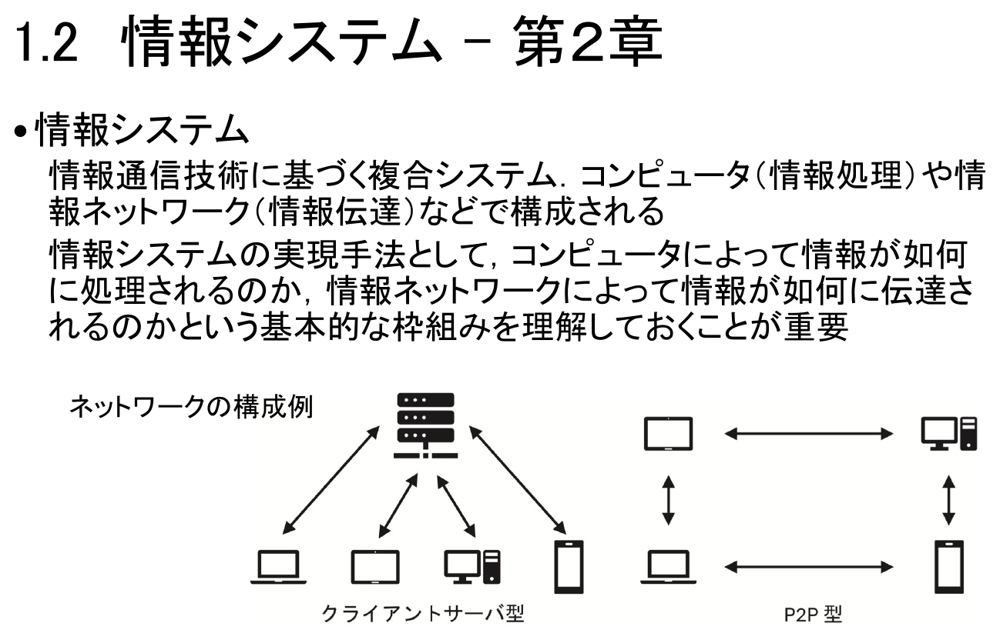
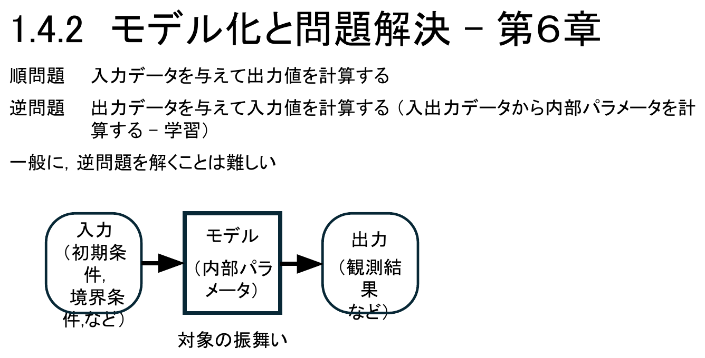
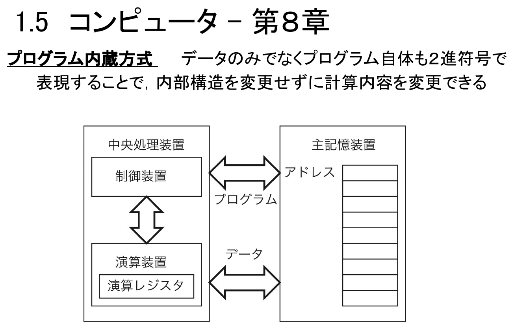

情報｜田中哲郎クラス講義ノート
このページは講義スライドの流れを節単位に組み直し、用語の関係と学習上の要点を説明する。表現・計算・社会を結ぶ見取り図を中心に、定義だけでなく、なぜ必要か、どのように使うかまで確認する。
多くの受講者は「情報」という科目名から、パソコンやスマートフォンの使い方、表計算ソフトの操作、プログラミング言語の文法といったコンピュータリテラシーを思い浮かべる。実際、そうした操作の技能は日常でも役立つ。しかし本科目が目指すのはそれだけではない。むしろ「情報」という言葉が指す対象を、個々の道具の使い方から一段引き上げて捉え直し、本来の意味での「情報」に対する統一的な視点を得ることが目標である。
では統一的な視点とは何か。第1章は、第2章以降で個別に深く学ぶ内容を先取りして俯瞰する回であり、以後の章は次の四つの柱のどこかに位置づけられる。
この四つは独立した話題の寄せ集めではない。表現・伝達の仕組みがあって初めて情報システムは動き、モデル化・機械学習の考え方があって初めて問題解決のための処理が具体化し、それらすべてを実行するのがコンピュータであり、最終的にその恩恵と課題を受け止めるのが人間と社会である。第1章の個々の語句を暗記する必要はないが、後の章を読むときに「今どの柱の話をしているか」を意識できるようにしておくと、個別の用語がばらばらの知識にならずに済む。
LINEでの連絡、鉄道の自動改札、カーナビゲーション、そしてこの科目のUTOLでの課題提出まで、日常のサービスの多くは情報通信技術（ICT）に基づく複合システムとして動いている。これを本科目では情報システムと呼ぶ。
情報システムとは、情報通信技術（ICT）に基づく複合システムであり、コンピュータ（情報処理）や情報ネットワーク（情報伝達）などによって構成されるものをいう。片方だけでは機能しない点が重要である。コンピュータがどれほど高速に計算できても、結果を離れた相手に届ける手段がなければサービスにならず、逆にネットワークがどれほど発達していても、送受信される情報を処理する仕組みがなければ意味のあるやり取りにならない。
実際のネットワークは、家庭やオフィスの端末が近くの機器を経由し、さらに広域のネットワークやサーバへとつながる階層構造を持つ。下図のように、末端の利用者から見えているのは自分の端末とサービスの画面だけだが、その背後には多数の中継機器と、情報を処理するコンピュータ群が存在する。

したがって、情報システムを理解するには、コンピュータによって情報がどのように処理されるのかと、情報ネットワークによって情報がどのように伝達されるのかという二つの基本的な枠組みを、それぞれ理解しておくことが重要になる。前者は本章後半（コンピュータ）と第5〜8章、後者は次節（表現・符号・通信）と第3・4章で扱う。こうした複合システムを性能・信頼性・認証といった観点から評価する方法は第2章で詳しく学ぶ。
情報を誰かに伝えるためには、その前提として情報を表現しなければならない。文章・図・音声・映像などの表現形式そのものが情報伝達の土台であり、相手が人間であっても情報機器であっても、表現対象（何を表現するか）・表現目的（何のために伝えるか）・表現方法（どのような形式で伝えるか）の三つへの配慮が必要になる。同じ出来事でも、緊急速報として伝えるか、後で参照する記録として残すかで、選ぶべき表現方法は変わる。
2進符号は、0と1の組合せで情報を表す方式であり、コンピュータでの処理や情報ネットワークでの伝達に適した表現である。文字・画像・音声などあらゆる情報を最終的に2進符号へ変換して扱うため、その基本的な理解は情報システム全体を支える土台になる。一方情報理論は、送信者から受信者へ情報を伝達する際に生じる正誤の度合い（誤りの起こりやすさや、どれだけの情報が正しく伝わったか）をもとに定式化された理論であり、符号化の効率や誤り訂正の限界を考える枠組みを与える。
具体的な符号化方式（文字コード、圧縮、ハフマン符号など）や情報量の考え方は第3章で扱う。
情報を離れた相手に届けるには、送り手と受け手が同じ規則に従っている必要がある。この通信規約（プロトコル）は、情報伝達の送り手と受け手の間での共通理解・取り決めであり、電気信号のやり取りのような通信実現の基盤レベルから、アプリケーションごとの取り決めのような応用依存レベルまで、階層を持つ。下位層は上位層に対して「正しくデータが届く」という前提を提供し、上位層は下位層の細部を意識せずにサービスを組み立てられる。この階層性のおかげで、通信機器やアプリケーションを個別に開発・交換しても、全体として通信が成立する。
これらはいずれも公開鍵暗号方式が基礎となっている。三者を混同しやすいが、「秘密を守る」「改ざんを防ぐ」「相手を確かめる」という異なる目的に対応することを区別しておくと、第4章で学ぶ技術的な仕組みや、第2章で学ぶ認証の設計を理解しやすくなる。
符号化の具体的な方式や情報量の計算は第3章、プロトコルの階層や暗号・署名・認証の技術的な仕組みは第4章で、それぞれさらに詳しく学ぶ。認証や暗号は独立した技術ではなく、2024年度共通大問1の遠隔会議システムのように、通信・圧縮と組み合わさった一つの情報システムとして出題されることが多い。
プログラムはアルゴリズムを特定の言語で書き下したものであり、実装の細部は変わっても、計算量の大枠はアルゴリズムそのものによって決まる。具体的なアルゴリズムの設計・評価は第5章で学ぶ。
モデルとは、対象の性質・特徴を反映した代替物であり、問題解決に利用される。対象そのものを直接扱う代わりに、重要な性質だけを取り出した簡略化された表現を使うことで、計算や予測が可能になる。モデル化とは、このモデルを作ることであり、対象の性質を表すデータの記述と、対象の振舞いを表すモデルの記述によって構成される。処理対象となる問題に応じて、適切な問題解決パターンを選定・組合せることでモデル化は実現される。
モデルは「入力→モデル→出力」という枠組みで捉えられる。入力には初期条件・境界条件などが、モデルには内部パラメータが、出力には観測結果などが対応し、これらの関係全体が対象の振舞いを表す。

一般に、逆問題を解くことは順問題を解くより難しい。同じ出力を生む入力（あるいは内部パラメータ）の組合せが一通りとは限らず、観測データにはノイズが混じるため、わずかな観測誤差が推定結果を大きく揺るがすこともある。順問題が「原因から結果へ」の一方向の計算で済むのに対し、逆問題は「結果から原因を絞り込む」という、情報が欠けた状態からの推定になるためである。
モデル化には、対象の性質・特徴に対する理解が不可欠である。しかし、個人の好みや社会現象、自然言語による記述など、明確な規則を人間があらかじめ書き下すのが難しい対象は少なくない。こうしたモデル化困難な対象に対して有効なのが機械学習である。
つまり機械学習は、「学習（逆問題を解いてモデルを作る）」と「推論（順問題を解いて予測する）」という二つの段階に分けて理解できる。この整理を押さえておくと、第7章で個別の学習手法を学ぶときに、それぞれがどちらの段階の話をしているのか見失わずに済む。
汎用コンピュータとは、様々な問題解決に利用できる自動機械である。現実世界の対象（データ）は、数値を用いてモデル化さえできれば処理可能であり、その数値は2進符号で表現され、論理回路によって処理される。
ここで鍵になるのがプログラム内蔵方式である。データだけでなく、プログラム自体も2進符号として同じ記憶装置に格納することで、コンピュータの内部構造（回路そのもの）を変更せずに、記憶されているプログラムを差し替えるだけで計算内容を変更できる。

この方式のおかげで、一台の汎用コンピュータが、表計算・画像編集・ゲームなど全く異なる処理を、ハードウェアを作り替えることなくこなせる。回路の設計と、その上で動かすプログラムの設計とを分離できることが、コンピュータが「汎用」たりうる理由である。詳しい回路構成や命令実行の仕組みは第8章で学ぶ。
汎用コンピュータがどれほど強力でも、利用者がその能力を引き出せなければ意味がない。利用者と情報システムとの接点をユーザインタフェースと呼び、情報システムの性質と人間の認知行動の両方に基づいた適切なデザインが求められる。
GPSの精度向上によって、リアルタイムの道路案内が可能になった。ここには性質の異なる二種類の案内がある。経路案内では、これから進むべき道筋に加えて所要時間や通行料金の提示が必要になる。分岐案内では、運転中の一瞬で位置を特定できる簡潔な表示や、適切なタイミングでの音声指示が求められる。両者は同じ「案内」でも、利用者が置かれている状況（じっくり確認できるか、瞬時に判断しなければならないか）が異なるため、デザインの要件も異なる。なお、完全自動運転が実現すれば、運転操作そのものを利用者が担わなくなるため、瞬時の分岐案内よりも、目的地までの見通しを示す経路案内の重要性が増すと考えられる。
さらに、年齢・言語・身体的な条件など、利用者の知識や能力には幅がある。特定の利用者だけを想定するのではなく、広い範囲の知識や能力に対応できるシステムのデザインをユニバーサルデザインという。ユーザインタフェースの詳しい設計原則や評価方法は第9章で学ぶ。
情報システムは、まだ新しい存在であり、さらに更新され続けているという性質を持つ。これは単なる技術的な特徴ではなく、社会的な課題を生む。情報システムは既存の社会の枠組みに必ずしも適合せず、それに対応する法律はしばしば後追いで制定される。
また、情報ネットワークの発展によって、情報発信の主体はマスメディアから個人へと変化してきた。これに加えて、生成AIの能力向上により、偽の画像・映像・音声などが容易に作られるようになっている。
発信の主体が拡散し、しかも偽の情報を作る技術的な敷居が下がったことで、受け手は情報の真偽により注意を払う必要がある。「見たものをそのまま信じる」という態度は、情報システムが未成熟だった時代よりも危険になっている。
このように情報システムが日々変化する以上、固定的な解決手段はあらかじめ得られない。むしろ、情報に対する系統的な知識・経験をもとに、利用者自身が状況に応じて判断することが求められる。これを情報リテラシーという。第10章では、この情報リテラシーや、情報技術が社会・制度・権利にもたらす変化を具体的に扱う。
用語を単独で暗記するのでなく、題材のどこにその概念が現れ、どの条件を根拠に判断するかを説明できるようにする。
表現・計算・社会を結ぶ見取り図は独立した暗記事項ではなく、情報を表現し、処理し、伝え、社会で安全に利用するための一連の考え方としてつながっている。各節の太字語を自分の言葉で説明できるか確認しよう。